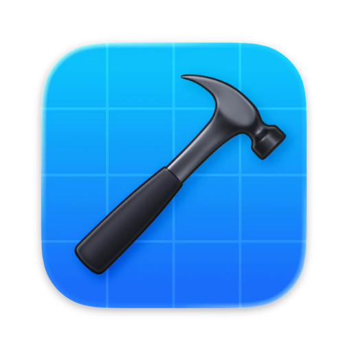
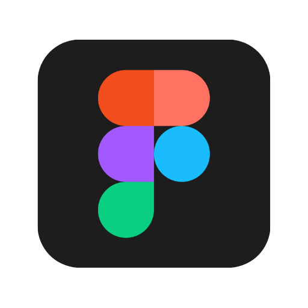
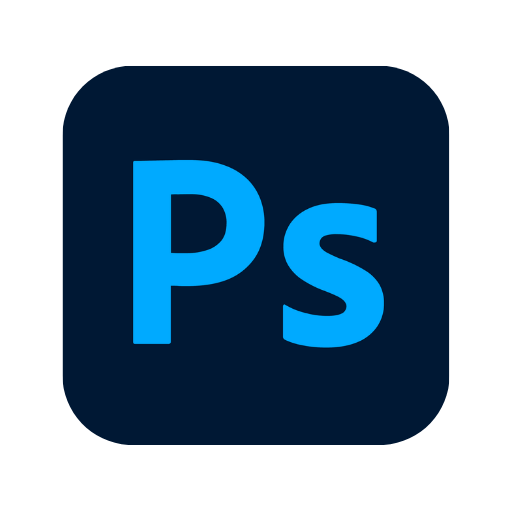
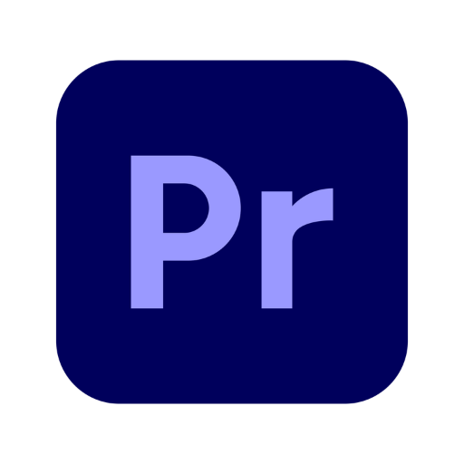
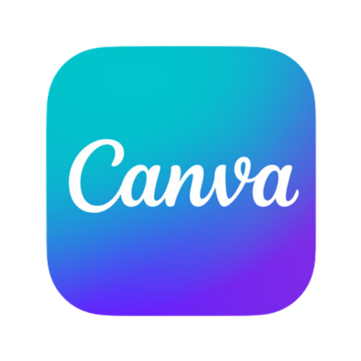

Tools I use

Xcode VS Code
Figma
Photoshop
Premiere
CanvaAbout
The same question I had as a kid, pointed at something physical.
I have always been fascinated by how much can be created from nothing but a computer. We are living in a decade where digital creativity has made it possible to build things that once seemed impossible, from films and software to entire videogame worlds.
That fascination has led me to create several projects of my own, exploring what can be built with the tools available to me. Two of my favourites are featured above.
Now, I aspire to become a robotics engineer, taking that same ability to create digitally and bringing it into the physical world. Hopefully, I can be part of a future where technology continues to make real progress for everyone.
Contact
fake_email@gmail.comAwards
-
Swift Student Challenge Winner
Apple
-
Future Innovators Award
Australian Defence Force